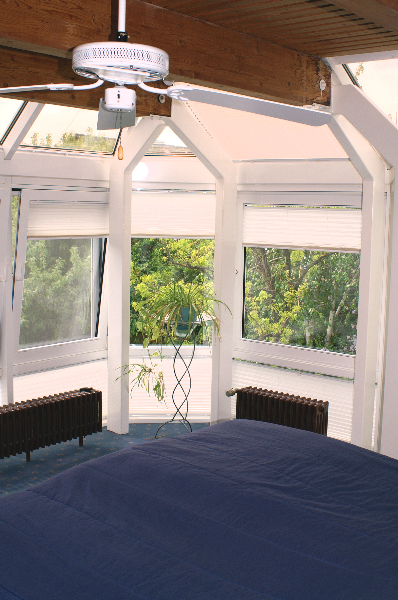
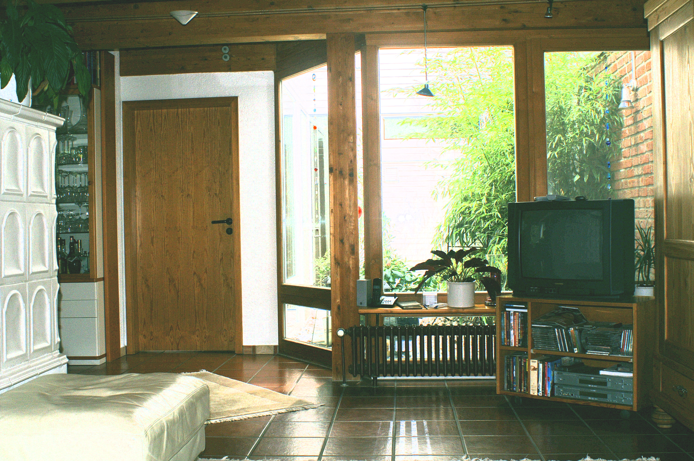
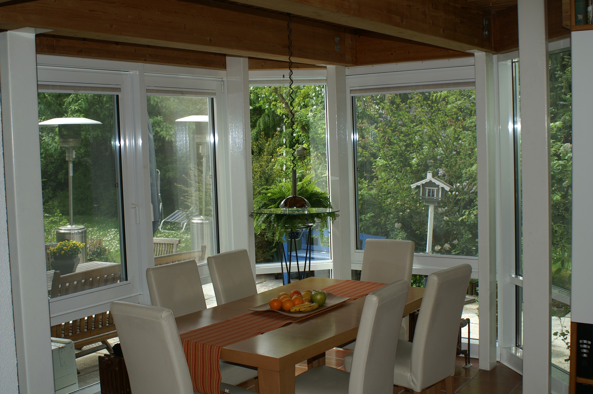
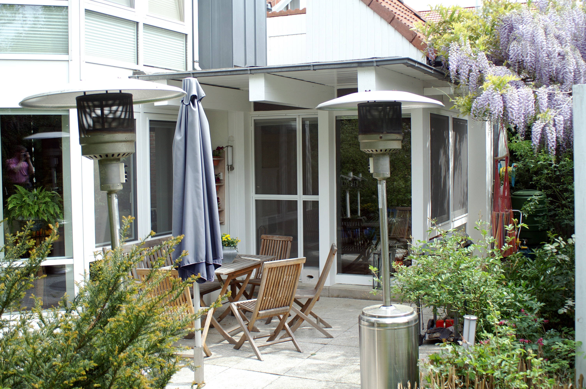

Als wir das Haus im Mühlspielweg zum ersten Mal sahen, waren wir sofort begeistert. Es war ultramodern, jedenfalls für damalige Verhältnisse, mit klaren Linien, ungewöhnlichen Winkeln, vielen Glasflächen und einem Turm, in dem das Treppenhaus lag. Hilde und ich mochten Bauhausarchitektur, und dieses Haus entsprach ziemlich genau unserer Richtung. Innen gab es viel Holz, Terrakottafliesen und sichtbare Balken. Alles war aufeinander abgestimmt und so gut wie neu.
Das Haus gehörte der Familie Reimer. Sie hatte zwei Kinder und wollte sich vergrößern. Vielleicht spielte dabei auch eine Rolle, dass das Haus an das Nachbarhaus angebaut war. Davon bemerkte man zwar kaum etwas, weil beide Grundstücke geschickt voneinander abgeschirmt waren. Aber die Reimers wollten offenbar lieber ein größeres Haus, das ganz für sich allein stand.
Bei der Besichtigung lief uns zunächst ihr Dackel über den Weg. Wie er hieß, weiß ich nicht mehr. Später begegnete er uns noch einmal. Dann gingen wir durch das Haus, und eigentlich wurde uns ziemlich schnell klar, dass wir es haben wollten. Es war unser erstes eigenes Haus, und wir waren Feuer und Flamme. Auch Jan und Kaja gefiel es. Im Garten stand ein Spielhaus. Damit war für die Kinder die wichtigste Frage bereits beantwortet.
Wir hätten das Haus praktisch so übernehmen können, wie es war. Es war vollständig eingerichtet, geschmackvoll und bestens gepflegt. Vielleicht mussten wir später ein paar Kleinigkeiten verändern, aber ich kann mich an nichts Wesentliches erinnern. Einziehen, Möbel aufstellen, fertig. So ungefähr jedenfalls.

Im ersten Stock lagen unser Schlafzimmer und die beiden Kinderzimmer. Jan bekam das Zimmer auf der rechten Seite. Darin stand ein Etagenbett, sodass auch einmal ein Freund bei ihm übernachten konnte. Kajas Zimmer war ungewöhnlicher. Es erstreckte sich über zwei Ebenen. Oben im Turm lag ein kleines, verwinkeltes Spielzimmer, fast ein wenig verwunschen. Kaja war damals acht Jahre alt und fand es nicht immer nur gemütlich. Manchmal war ihr das eigene Reich im Turm auch ein wenig unheimlich.
Ganz oben unter dem Dach gab es ein vollständig eingerichtetes Apartment mit Schlafzimmer und eigenem Bad. Von dort hatte man einen schönen Blick nach unten. Ein Penthouse war es nicht, obwohl uns das Wort vermutlich gefallen hätte. Aber für Gäste war es ideal.
Der eigentliche Mittelpunkt des Hauses lag im Erdgeschoss. Dort stand ein gewaltiger Kachelofen. Er war nicht nur schön, sondern notwendig, denn das Haus war nicht besonders gut isoliert. Der Architekt hatte sich bei der Gestaltung große Mühe gegeben, bei einigen praktischen Einzelheiten aber etwas weniger. Im Winter gruppierte sich deshalb die Familie um den Ofen, besonders Kaja, der meistens kalt war. Wenn man das Monster einmal angeheizt hatte, strahlte es eine unbeschreibliche Wärme ab. Zweimal am Tag wurde es gefüllt, dann blieb das Haus auch in den kältesten Wintermonaten warm.

Vom Wohnzimmer und vom Esszimmer blickte man in einen kleinen verglasten Innenhof mit einem Springbrunnen und einer Bambuspflanze. Das Wasser plätscherte vor sich hin, und man saß mitten im Haus trotzdem ein wenig im Freien. An diesen Innenhof grenzten das Gäste-WC und dahinter eine Dusche. Man konnte dort praktisch unter freiem Himmel duschen. Auch das gefiel uns so gut, dass wir uns die Idee für später merkten.
Überhaupt haben wir uns von diesem Haus einiges abgeschaut. Das Esszimmer lag wie ein Glaskasten am Garten. Beim Frühstück, Mittagessen oder Abendessen schaute man hinaus auf die Wiese und saß beinahe in der Natur. Vom Esszimmer ging es in die kleine Küche, an die sich ein Vorratsraum anschloss. In der Küche gab es eine kleine Bar. Dort saßen Jan und Kaja morgens beim Frühstück, bevor sie zur Schule gingen.

Gleich neben dem Eingang lag mein Büro. Im Keller befand sich eine Sauna. Hilde und ich gingen damals in Göttingen häufig joggen; Hilde lief zu dieser Zeit noch mit. Danach ging es unter die Dusche und manchmal auch in die Sauna. Selbst eine Alarmanlage war eingebaut. Das Haus hatte eigentlich alles, was wir brauchten, und noch einiges mehr, von dem wir vorher nicht gewusst hatten, dass wir es brauchten.
Das Leben in Nikolausberg war für die Kinder sehr behütet. Der Ort war eine Art Professorendorf. Hier wohnte ein guter Teil der Fakultät. Die Schule lag nur wenige Gehminuten entfernt, und vieles spielte sich in der unmittelbaren Nachbarschaft ab. Das bedeutete allerdings nicht, dass der Schulweg von Anfang an problemlos verlief. Kaja wollte zu Anfang morgens nicht aus dem Haus. Sie ging später durchaus gern zur Schule, aber der Abschied von uns bereitete ihr anfangs große Schwierigkeiten. Sie weinte bitterlich, und manchmal mussten wir sie praktisch aus dem Haus zerren. Uns tat das genauso weh wie ihr. Also nahmen wir uns jeden Tag ein paar Meter mehr vor: erst bis vor die Tür, dann ein Stück weiter, schließlich allein bis zur Schule. Nach einigen Wochen hatte es sich eingespielt.
Jan fühlte sich zunächst etwas isoliert. Er hatte seine Freunde in Essen zurücklassen müssen und fand nicht sofort Anschluss. Das änderte sich, als er Tobi Bär kennenlernte, der nur ein paar Häuser weiter wohnte. Die beiden wurden später dicke Freunde.
Im Garten stand das Spielhaus, das bereits bei der ersten Besichtigung seine Wirkung getan hatte. Unten lagen einige Gartengeräte, oben konnten die Kinder spielen. Man konnte sogar auf das Dach klettern. Kaja saß dort häufig mit ihrer Freundin Yanne, die etwas unterhalb von uns wohnte. Die beiden machten es sich oben gemütlich und hatten ihr eigenes kleines Reich. Außerdem stand im Garten eine Tischtennisplatte. Kinder waren bei uns gern gesehen und entsprechend häufig da.
Die Nachbarschaft war überschaubar. Oberhalb von uns wohnten Stöbeners ein älteres, etwas eigenes Ehepaar, mit dem wir aber gut zurechtkamen. Gegenüber wohnte mein Oberarzt Witt mit seiner Frau, einem Töchterlein aus gutem Hause. Ihr Vater war Chefarzt, sie selbst war musisch begabt und spielte recht gut Klavier. Bei geöffnetem Fenster ließ sie uns daran teilhaben. Das hatte gelegentlich etwas Vorführendes: Seht her, mein Mann hat nicht nur eine Frau, sondern eine, die auch noch super Klavier spielen kann. Unterhalb unseres Hauses lebten weitere ältere Ehepaare. Auch mit ihnen gab es keine Probleme. Ob wir damals ein richtiges Nachbarschaftsfest veranstaltet haben, weiß ich nicht mehr. Wahrscheinlich schon. Wir hatten uns angewöhnt, nach einem Umzug die Nachbarn einzuladen. Vielleicht haben wir es auch diesmal getan. Geblieben ist davon jedenfalls keine besondere Erinnerung, was vermutlich für einen friedlichen Verlauf spricht.
Vom Wohnzimmer führte eine Tür hinaus auf eine überdachte Terrasse. Selbst wenn es regnete, konnte man draußen sitzen. An warmen Tagen wurde dort gegrillt.

Die ungewöhnliche Architektur hatte aber auch ihre Schwächen. Ganz oben unter dem Dach gab es undichte Stellen, und gelegentlich tropfte es hinein. Der Architekt hatte offenbar mehr Freude an Erkern, Glasflächen und dem Treppenturm gehabt als an der letzten Dachabdichtung.
Wir wohnten im Mühlspielweg, solange ich in Göttingen blieb. Es war unser erstes eigenes Haus und eines, in dem wir vieles fanden, was wir später noch einmal aufgreifen sollten: das Wasser, die Glasflächen, den Blick in den Garten, die Sauna und sogar die Dusche im Freien.
Im Jahr 2006 verließen wir Göttingen wieder. Nach allem, was in der Klinik geschehen war, konnte und wollte ich dort nicht weitermachen. Ich bewarb mich anderweitig und ging nach Berlin. Damit endete unsere schöne Zeit im Mühlspielweg im beschaulichen Nikolausberg.